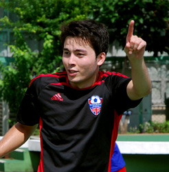

|
Nikolai Jessen-Petersen
- British Football Academy Tokyo - Assistant Coach
- BK Skjold (CIS) U-14 Boys Head Coach
- Copenhagen International School U-12 Girls Head Coach (NECIS)
- BK Skjold (CIS) U-16 Boys Head Coach
- Copenhagen International School U-10 Developmental Training Head Coach
- DC Stoddert Soccer Camps, Washington D.C., Coach
- Tokyo Panthers (TML Div 1) Player
Nikolai is a Half-Danish/Half-Japanese football enthusiast who has lived in a number of different places, all of in which one thing has stayed true, his love for the beautiful game. Born in Geneva, Switzerland, then educated in Washington D.C., and Boston, Nikolai has been surrounded by vast arrays of different cultures in his entire life. This has allowed him to learn that one of the most powerful universal languages is that of football. He hopes to relay this same sentiment to all of the kids he coaches, through focusing on developing not just the skills, but the love and interest for the game.
Nikolai's father is an ex-professional footballer in the 1st Division of Denmark, and he made sure that Nikolai tried to one day follow in his footsteps. Although Nikolai was unable to ever amount to the same level of success, he certainly developed the same love for the game his father had. Nikolai was still able to play at very high levels in high school, university, and continues to do so here in Japan with the Tokyo Panthers of the Tokyo Metropolis League. Both Nikolai and his father are passionate West Ham United supporters.
Nikolai coached several teams of all different age groups in Copenhagen, Denmark, while he was working as a teacher at the Copenhagen International School. Before that, he coached in soccer camps and academies as a developmental soccer coach for kids under the age of 14. Nikolai aspires to continue teaching in International School settings here in Tokyo, Japan, and hopes to continue coaching every step along the way! His style is primarily focused on the personal development and football understanding of a player, where the most important thing is that a player's love and passion for the game always has room to grow.
|
|